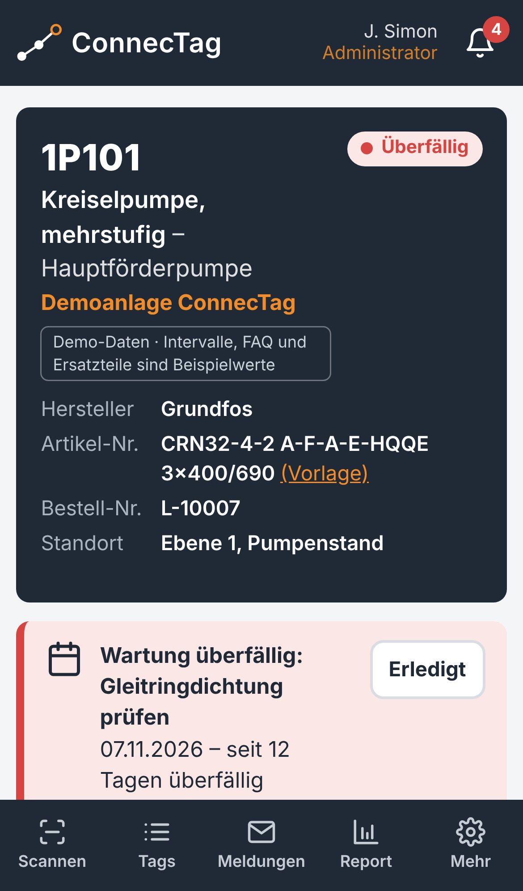
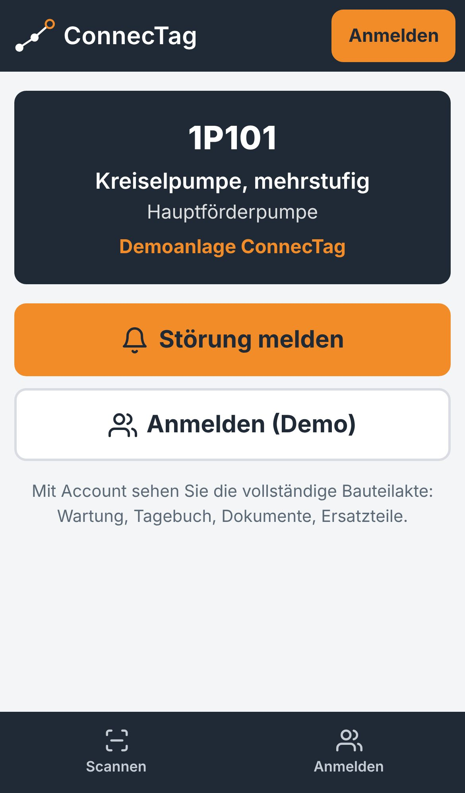
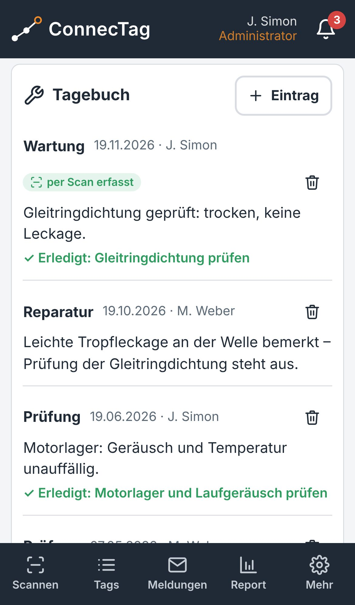
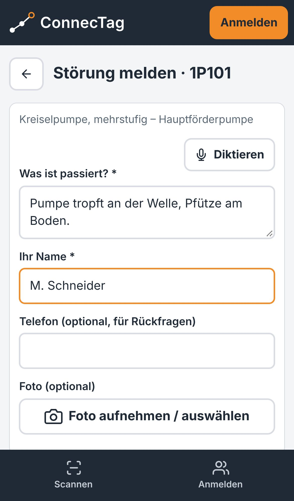
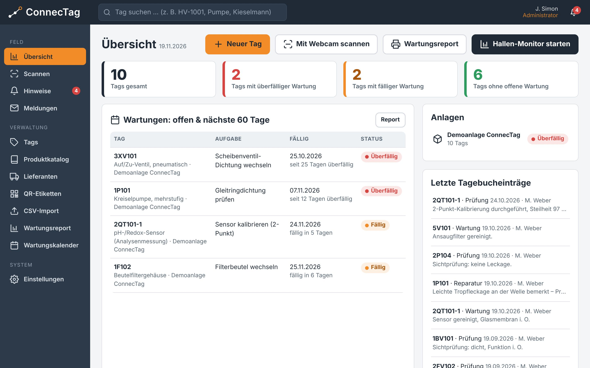
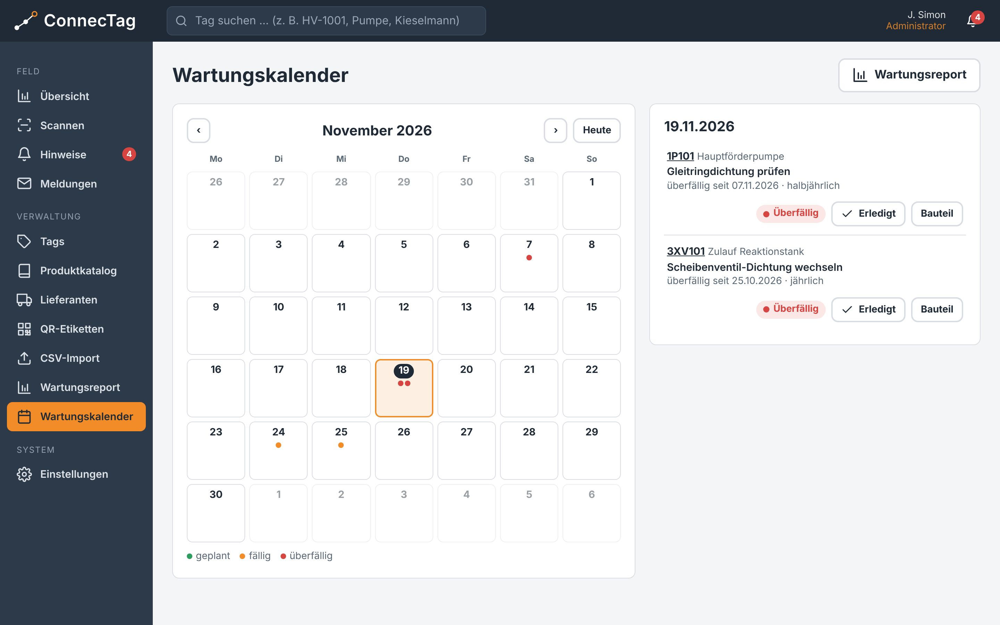

Scan ohne App-Installation
ConnecTag läuft als Web-App im Browser. Den QR-Code liest jede Handykamera – ohne App-Store und ohne Installation. Auf Wunsch liegt die App mit einem Tipp auf dem Startbildschirm.
QR-Code am Bauteil-Tag scannen – alle Infos sofort auf dem Handy: Anleitungen, Wartung, Ersatzteile und das Tagebuch jeder Armatur, Pumpe und Messstelle.
Web-App für Handy, Tablet und PC – ohne Installation.

ConnecTag verbindet den Tag an der Anlage mit seiner digitalen Akte. Wer vor dem Bauteil steht, hat alle Informationen in der Hand.
ConnecTag läuft als Web-App im Browser. Den QR-Code liest jede Handykamera – ohne App-Store und ohne Installation. Auf Wunsch liegt die App mit einem Tipp auf dem Startbildschirm.
Betriebsanleitungen, Datenblätter, FAQ und Ersatzteile mit Bestellnummern – zu jedem Tag. Unterlagen des Herstellers öffnen sich direkt in der App.
Wartungen, Prüfungen und Reparaturen werden am Bauteil dokumentiert. Einträge nach dem Scan tragen den Vermerk „per Scan erfasst“ – der Nachweis, dass jemand vor Ort war.
Intervalle je Aufgabe, ein Wartungskalender und der Wartungsreport für Monat oder Quartal – mit den benötigten Ersatzteilen und als PDF zum Drucken oder Weitergeben.
Wer einen Schaden bemerkt, scannt den Code und meldet ihn – mit Foto, ohne Anmeldung. Die Meldung landet direkt beim Administrator und lässt sich mit einem Klick ins Tagebuch übernehmen.
Leser sehen, Bearbeiter dokumentieren, Administratoren verwalten. Jede Rolle sieht genau die Funktionen, die sie braucht.
Keine Werbung, keine Tracker, keine Weitergabe an Dritte – Ihre Anlagendaten gehören Ihnen.
Offline-Modus für Hallen ohne Netz, Sprachnotizen statt Tippen mit Handschuhen und die Oberfläche auf Englisch.
Große Schaltflächen für den Einsatz mit Handschuhen – und eine übersichtliche Ansicht am PC.





Abbildungen aus der Demo-Anlage. Inhalte sind Beispieldaten.
Jedes Bauteil erhält ein robustes Etikett mit QR-Code und seiner Tag-Nummer. Vorhandene Tag-Listen lassen sich per CSV übernehmen.
Handykamera auf den Code halten – die Bauteilseite öffnet sich sofort im Browser.
Unterlagen und Wartungsstand prüfen, Arbeiten dokumentieren oder eine Störung melden.
Preise auf Anfrage – sprechen Sie uns an.
Kontakt aufnehmenSie möchten ConnecTag an Ihren Bauteilen ausprobieren oder haben Fragen? Schreiben Sie uns – wir melden uns zeitnah.